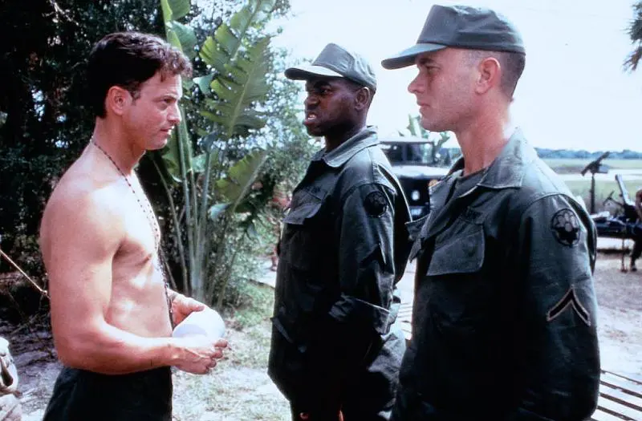
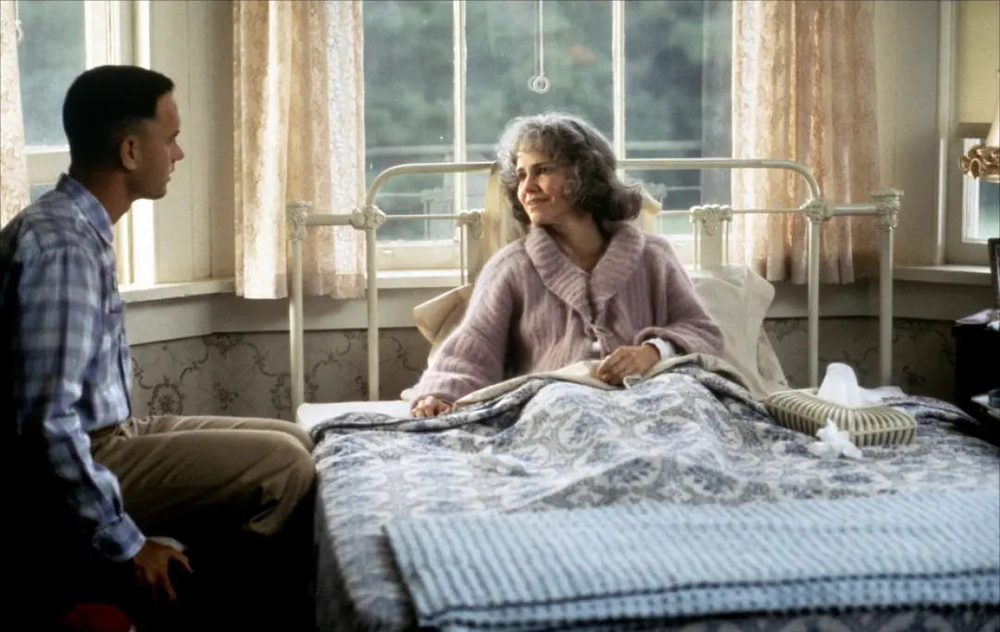

>电影简介< |
|
|  |
阿甘是个智商只有75的低能儿。在学校里为了躲避别的孩子的欺侮，听从一个朋友珍妮的话而开始“跑”。他跑着躲避别人的捉弄。在中学时，他为了躲避别人而跑进了一所学校的橄榄球场，就这样跑进了大学。阿甘被破格录取，并成了橄榄球巨星，受到了肯尼迪总统的接见。 在大学毕业后，阿甘又应征入伍去了越南。在那里，他有了两个朋友：热衷捕虾的布巴和令人敬畏的长官邓·泰勒上尉。这时，珍妮已经堕落，过着放荡的生活。阿甘一直爱着珍妮，但珍妮却不爱他。在战争结束后，阿甘作为英雄受到了约翰逊总统的接见。在一次和平集会上，阿甘又遇见了珍妮，两人匆匆相遇又匆匆分手。在“说到就要做到”这一信条的指引下，阿甘最终闯出了一片属于自己的天空。在他的生活中，他结识了许多美国的名人。他告发了水门事件的窃听者，作为美国乒乓球队的一员到了中国，为中美建交立下了功劳。猫王和约翰·列侬这两位音乐巨星也是通过与他的交往而创作了许多风靡一时的歌曲。最后，阿甘通过捕虾成了一名企业家。为了纪念死去的布巴，他成立了布巴·甘公司，并把公司的一半股份给了布巴的母亲，自己去做一名园丁。阿甘经历了世界风云变幻的各个历史时期，但无论何时，无论何处，无论和谁在一起，他都依然如故，纯朴而善良。 在隐居生活中，他时常思念珍妮。而这时的珍妮早已误入歧途，陷于绝望之中。终于有一天，珍妮回来了。她和阿甘共同生活了一段日子。在一天夜晚，珍妮投入了阿甘的怀抱，之后又在黎明悄然离去。醒来的阿甘木然坐在门前的长椅上，然后突然开始奔跑。他跑步横越了美国，又一次成了名人。 在奔跑了许久之后，阿甘停了下来，开始回自己的故乡。在途中，收到了珍妮的信。他立刻去见找她。在公交站台候车时。 阿甘向他人讲述了他之前的经历。于是他又一次见到了珍妮，还有一个小男孩，那是他的儿子。这时的珍妮已经得了一种不治之症。阿甘和珍妮三人一同回到了家乡，一起度过了一段幸福的时光。珍妮过世了，他们的儿子也已到了上学的年龄。阿甘送儿子上了校车，坐在公共汽车站的长椅上，回忆起了他一生的经历。 |
|  | |